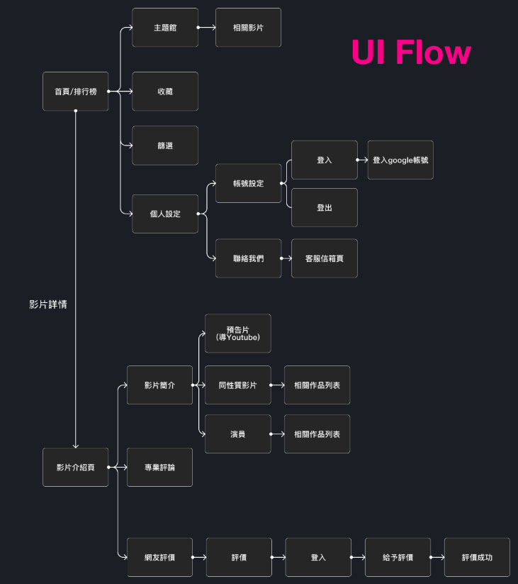
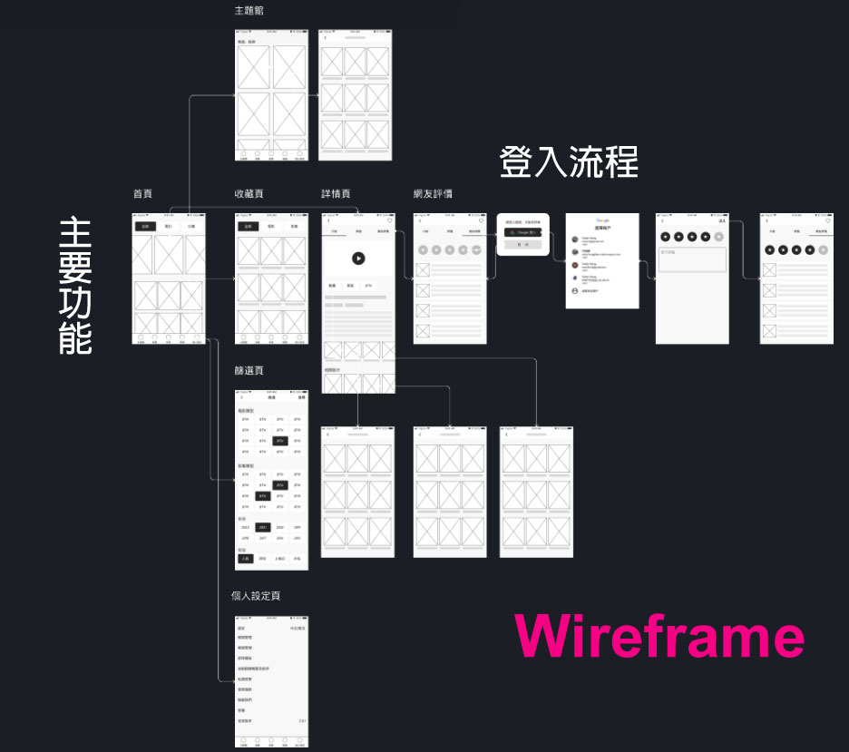
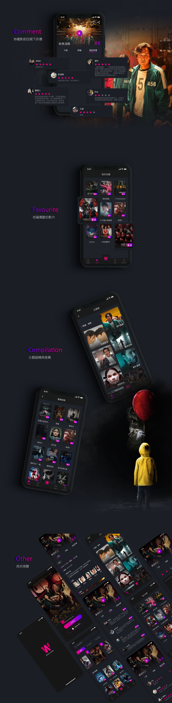
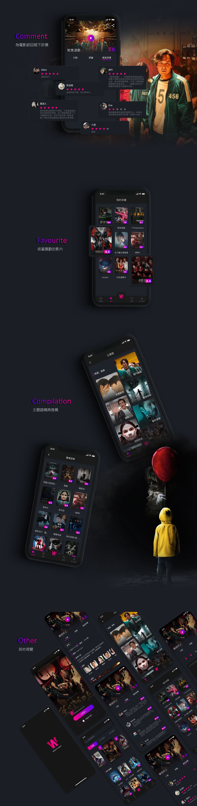

成果
量化成果

質化成果
截至目前下載量不是很多，不到百人，推斷可能跟區域有關，這支app用戶以香港人為主,片名語系以內地為主，香港的宣傳不足、關鍵字的運用等…，導致用戶與回饋不多。
使用者研究
介面設計
互動設計
Android工程師、IOS工程師、網頁工程師
2週
UI/UX
使用者研究、與工程師討論資料庫資訊(影視API)、跨平台/裝置的介面設計、易用性測試。
觀看影音,尤其因為疫情的關係,在家的時間變長,也更頻繁收看串流影音,因此常常需要上網搜尋影劇相關的評價,了解該影劇是否值得花時間觀賞。
以台灣來說,使用者常用的影音平台有Netflix、愛奇藝、LINE
TV、Disney+、YouTube。
整體視覺以戲院常見深色系為主,細部元件加入擬物化(Soft UI)元素,突顯出視覺的立體感。
 演員作品關鍵字搜尋功能，將會在第二階段開發時新增。
截至目前下載量不是很多，不到百人，推斷可能跟區域有關，這支app用戶以香港人為主,片名語系以內地為主，香港的宣傳不足、關鍵字的運用等…，導致用戶與回饋不多。

 

*防剽竊/盜用專案，一般瀏覽者僅開放部分詳情，若業主對專案有興趣，可與我聯繫。